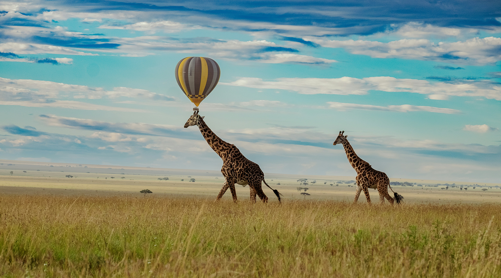
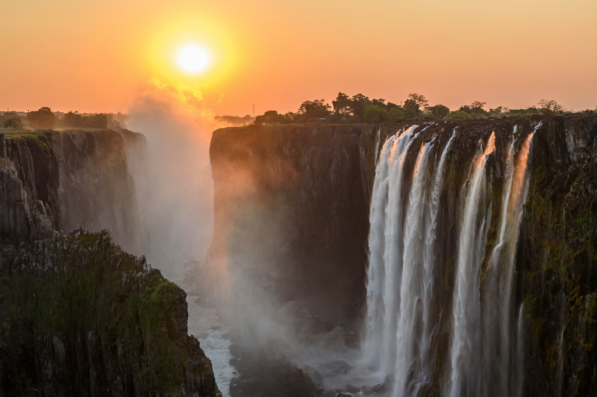
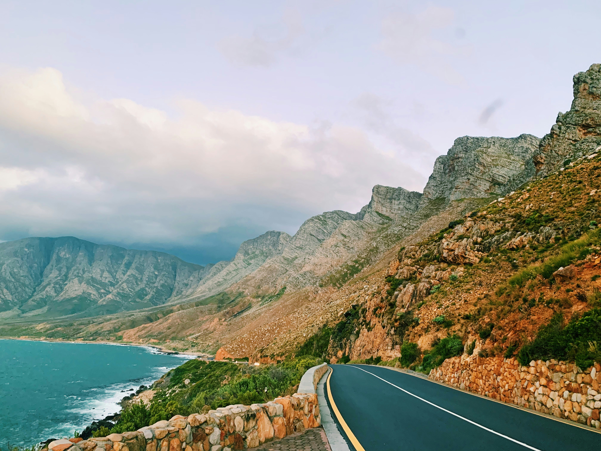

Serengeti Safari Adventure
Immerse yourself in the breathtaking spectacle of the Great Migration in Tanzania’s iconic Serengeti National Park, where nature’s grandeur unfolds in one of the world’s most extraordinary wildlife events. Join our expert-guided safaris, led by seasoned professionals with intimate knowledge of the region, to witness the awe-inspiring journey of millions of wildebeest, zebras, and other animals as they traverse the vast, golden plains in search of greener pastures. Stay in luxurious, eco-friendly camps that blend comfort with sustainability, offering an authentic and immersive experience amidst the wilderness. Engage deeply with the vibrant Maasai culture through meaningful interactions and guided visits, gaining insight into their rich traditions and way of life. This comprehensive package includes five nights of premium accommodation, daily guided safaris tailored to maximize wildlife sightings, all meals featuring locally inspired cuisine, and enriching cultural excursions, ensuring a seamless and unforgettable adventure.
Cost: $2,500 per person (based on double occupancy)
Duration: 6 days / 5 nights
Inclusions: Accommodation, meals, guided safaris, park fees, cultural tours
Best Time: July to October (Great Migration season)
Book Now

Victoria Falls Thrill & Tranquility
Experience the heart-pounding excitement of Victoria Falls, one of the world’s most magnificent and largest waterfalls, where the raw power of nature meets unparalleled adventure. This carefully curated package invites you to dive into an array of thrilling activities, including the exhilarating rush of bungee jumping from the iconic Victoria Falls Bridge and the adrenaline-fueled challenge of white-water rafting through the Zambezi River’s dramatic rapids. For moments of tranquility, unwind with serene sunset cruises along the Zambezi, where you can soak in breathtaking views of the surrounding landscapes and wildlife. Your adventure includes four nights of comfortable accommodation in a beautifully situated riverside lodge, offering the perfect blend of relaxation and immersion in nature. With expertly guided tours and a range of optional activities tailored to your personal interests, this package ensures a seamless and unforgettable journey, crafted to deliver both excitement and serenity in one of Africa’s most iconic destinations.
Cost: $1,800 per person (based on double occupancy)
Duration: 5 days / 4 nights
Inclusions: Accommodation, breakfast, guided tours, river cruise, activity fees
Best Time: May to August (high water season for the falls)
Book Now

Cape Town City & Nature Escape
Immerse yourself in the vibrant and multifaceted culture of Cape Town, a city renowned for its stunning landscapes and rich heritage, with this thoughtfully designed travel package. Marvel at the majestic beauty of the iconic Table Mountain, where guided hikes or cable car rides offer breathtaking panoramic views of the city and coastline. Wander through the colorful and bustling markets, such as the vibrant Greenmarket Square, where local artisans showcase their crafts and culinary delights reflect the region’s diverse flavors. Venture into the scenic wine regions of Stellenbosch, indulging in exquisite wine tastings at world-class vineyards nestled among rolling hills. This package seamlessly blends urban exploration with invigorating coastal hikes along the rugged cliffs of the Cape Peninsula and serene moments in charming seaside towns. Enjoy four nights of accommodation in a stylish boutique hotel, perfectly located to soak in the city’s unique charm, with expertly guided tours to iconic landmarks and ample free time to discover Cape Town’s eclectic neighborhoods, historic sites, and vibrant nightlife at your own pace, ensuring a deeply enriching and unforgettable experience.
Cost: $1,200 per person (based on double occupancy)
Duration: 5 days / 4 nights
Inclusions: Accommodation, breakfast, guided tours, wine tasting, transport
Best Time: November to March (summer season in Cape Town)
Book Now